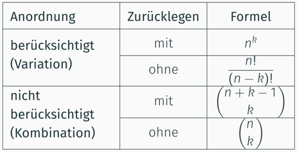

Mathe Klausur
Kombinatorik
A: Alle Fälle, welche man herausfinden will
Ω: Alle Fälle
P(A) = |A|/|Ω|
Fälle die nicht mit der Formel gelöst werden können:
Permutation
Die Anzahl ist wichtig aber es wiederholen sich keine Elemente
Permutation von n>0 verschiedenen Elementen:
P(n) := n!
Permutation mit Wiederholung
k: die Verschiedenen Gruppen
P(n) := n!/(k₁!*k₂!*...*kn!)
Beispiel: Man hat 3 gelbe und einen roten Ball. Wie viele anordnungen gibt es?
n = 4 (Summe aller Bälle)
P(n) := 4!/(3!*1!) = 24/6 = 4 Es gibt vier Möglichkeiten.
Variation
Auswahl von k Elementen von maximal n Elementen.
Berücksichtigung der Anordnung aber ohne Zurücklegen.
Kombination
Auswahl von k Elementen von maximal n Elementen.
ohne Berücksichtigung der Anordnung und ohne Zurücklegen.

siehe auch Vorlesung 4
Schreibweise von Permutationen
Zweizeilenform:

Zyklenschreibweise:

Bei der Zyklenschreibweise liest man erst die erste Zahl, dann die dazugehörige Permutation (die Zahl dadrunter)
Danach liest man die Zahl unter der zuletzt gelesenen Zahl.
Wenn man wieder bei der ersten Zahl angekommen ist hat man den Zyklus beendet
Verknüpfung zweier Permutationen (∘):
Wird auch Komposition genannt
σ∘ͳ ≠ ͳ∘σ die Reihenfolge ist wichtig


siehe auch Vorlesung 5